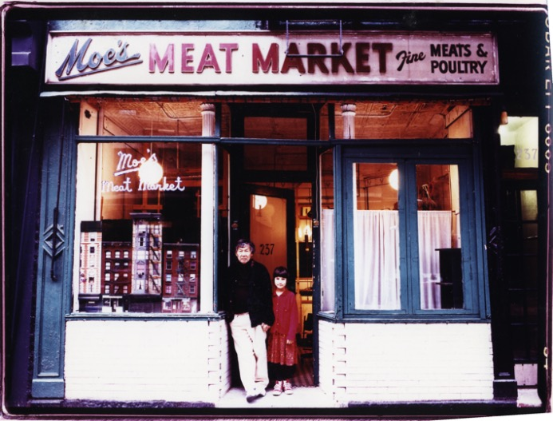

Mary F. Whitfield
Outsider Art Fair 2019
17 - 20 January 2019

Robert Kobayashi
Retrospective
1 August - 7 October 2017
Kate Keller Kobayashi
Flowers

Robert Kobayashi
Ionic Order Series
1 October 2015 - 29 February 2016
Coney Island State of Mind
Photographs by Ron Meisel
18 July - 16 September 2015
Robert Kobayashi
Clouage & Paintings
7 March - 23 May 2015
Frances Hynes
Animal works
paintings from the early 1980's
6 - 27 June 2015
Ray Johnson
Correspondance
1 November 2014 - 31 January 2015
City Angels
Paintings by Robert Kobayashi
6 - 30 August 2014
Requiescat in Pace
Skeletal Studies by John Spinks
2 - 30 November 2013
When the Wave Breaks
Installation by Milagros Melendez
1 - 24 August 2013
Now and Then
Selected work by John Spinks
7 - 30 March 2013
All Kinds of Weather:
Recent Watercolors
Frances Hynes
In cooperation with the June Kelly Gallery, New York
Recent Watercolors
Frances Hynes

Transparent Things
Recent Paintings by George Hildrew
5 March - 4 April 2009
Demobilize
Installation by Brandon d'Leo
6 March - 31 May 2008
© 2004-2020 Phyllis Stigliano Gallery. All rights reserved.
Built by www.siliconfarm.com